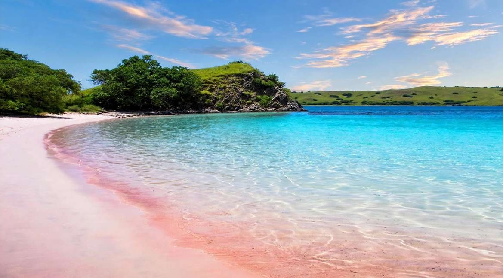

Sorsogon is often treated as the end of the road for travellers heading south through Luzon, especially those catching a ferry from Matnog to Samar. But the province deserves more than a quick stop at the port. It has quiet coastal towns, volcanic landscapes, rainforest, and beaches that reward travellers willing to spend a little more time exploring.
Two destinations show just how varied Sorsogon can be. Subic Beach in Matnog is known for its pale sand with a faint pinkish tint and clear coastal water. Reaching it means registering for an island-hopping trip and taking a boat to Calintaan Island. Bulusan Lake, on the other hand, is a peaceful lake surrounded by the lush forest of Bulusan Volcano Natural Park. Visitors come for the scenery, fresh air, and permitted lake activities.
They offer very different experiences, but both fit naturally into a Sorsogon itinerary. Here is how to plan a visit, what to expect, and how to make the most of your time in the province.

Subic Beach
- Pinkish-white sand on Calintaan Island
- Boat access only, after registering in town
- Pairs with Juag Lagoon, Calintaan Cave and Tikling
Bulusan Lake
- Forest-framed lake in Bulusan Volcano Natural Park
- Managed access and a park shuttle system
- Kayaking or boating when the park allows it
Subic Beach, Matnog: Sorsogon's Pinkish-Sand Beach
Subic Beach is on Calintaan Island, off the coast of Matnog at the southern end of Luzon. It is commonly called Matnog's Pink Beach, although the sand is better described as pinkish-white rather than a vivid, solid pink. Bits of red coral scattered through the pale sand give it that blush, and you notice it most when the sun is out.
The beach is a boat-access destination. You cannot simply drive to its shoreline from the town proper. Visitors normally register through the Matnog tourism office, arrange an authorized boat, and travel across the water to the island.
What makes Subic Beach special?
The appeal is its combination of light-coloured sand, clear water, and a relatively laid-back island atmosphere. It is a place to slow down rather than look for a long list of commercial attractions. Depending on the weather and sea conditions, the water can be inviting for swimming and wading.
The pink tone is not equally visible at every point or at every hour. Wet sand, cloud cover, changing light, and the amount of coral material along the shore can affect how it appears in photographs. Set your expectations for a beautiful pale beach with a delicate pink hue, not a beach that looks bright pink from end to end.
Subic Dako and Subic Saday
Travellers may hear the names Subic Dako and Subic Saday when arranging a Matnog island trip. These names are used for beach areas around the Subic island destination. Confirm with the tourism office or boat operator which shoreline and stops are included in your particular trip; do not assume every boat package visits every beach area.
Things to do at Subic Beach
- Swim and relaxEnjoy the clear coastal water when conditions are safe and swimming is permitted.
- Walk the shorelineTake time to appreciate the sand's subtle colour and the island scenery.
- Take photosMorning light can be pleasant for beach photography, while the appearance of the sand changes with the weather and tide.
- Stay overnightAn overnight visit gives you more time on the island and avoids squeezing the experience into a tight day trip. Arrange accommodation and return-boat timing before you go.
- Join an island-hopping routeSubic Beach is often combined with other Matnog attractions, making the boat trip more worthwhile.
Other Stops on a Matnog Island-Hopping Tour
Subic Beach is usually the main reason people book a boat, but the surrounding waters have other attractions. The exact route depends on sea conditions, local operating rules, time, and the stops approved for the day.
Juag Lagoon Fish Sanctuary
Juag Lagoon is a marine sanctuary known for its fish and sheltered-water setting. Visitors may be able to see marine life from the boat or take part in activities allowed by the sanctuary. Feeding, swimming, and snorkelling rules can change, so follow the staff's instructions and avoid touching or chasing marine animals.
This is a useful stop for families and travellers who want something beyond beach time. Ask what the current entrance or activity charge covers before paying.
Calintaan Cave, also called the Wishing Cave
Calintaan Cave is a coastal cave visited by some island-hopping boats. Its appeal is the contrast between rock formations, seawater, and the surrounding shoreline. Access depends on tides and sea conditions. Do not enter if waves are rough, the landing is unsafe, or the boat crew advises against it.
Tikling Island
Tikling Island is another beach stop associated with Matnog island hopping. It is known for its light-coloured sand and clear water. Whether it can be included in the same trip as Subic Beach depends on the route, weather, and time available. Ask the tourism office to explain the day's realistic itinerary rather than assuming every attraction can be covered.
How to Get to Subic Beach in Matnog
The first step is getting to Matnog town, then registering and arranging a boat to Calintaan Island.
From Manila
The most straightforward land option is an intercity bus bound for Matnog or the southern Bicol area. Some services travel directly to Matnog, while others end in Legazpi, Sorsogon City, or another town where you need to transfer.
A direct bus from Metro Manila is long and can take much of a day or overnight, depending on the service, traffic, and road conditions. Check the operator's current route and confirm whether the bus goes all the way to Matnog Port or only to a nearby terminal.
If you prefer to fly, use Legazpi as your air gateway and continue south by bus, van, or private vehicle. Allow several hours for the road to Matnog, and avoid booking a boat tour that depends on a tight flight-to-port connection.
From Bicol and Samar
Starting in Legazpi or Daraga
Bus or van to Matnog
Travel south toward Sorsogon by bus or van, then continue to Matnog. You may find a vehicle going directly, or you may need to transfer in Sorsogon City, Bulan, or at a junction serving the Matnog route. Tell the driver or dispatcher you are going to Matnog town or the tourism office near the port, and ask where the vehicle will drop you off before boarding.
Starting in Sorsogon City
Southbound bus, van or jeepney
Take a southbound vehicle serving Matnog. Travel time varies with the vehicle, stops, and road conditions. For a morning island-hopping trip, leave early and confirm the first available departure with the terminal or local transport operators.
Starting in Samar
RoRo ferry from Allen
Matnog is connected to Allen in Northern Samar by roll-on/roll-off ferry. Take the ferry to Matnog, then go to the municipal tourism office to register for island hopping. Ferry schedules and crossing times are separate from the Subic Beach boat arrangements, so allow a generous buffer between the two.
Coming up from the Visayas side gives you a chance to see more of Samar on the way. Our guide to the Biri Island rock formations covers a striking stop in Northern Samar, not far from Allen.
From Matnog Port to Subic Beach
The boat crossing
Matnog to Calintaan Island
BoatAuthorized onlyPlusTourism feePay withCash
-
Step 1
Go to the tourism office
Once in Matnog, proceed to the municipal tourism office or the designated tourism registration point.
-
Step 2
Register and pay
Register your group, pay the applicable charges, and arrange a boat through the local system. Do not hire an unregistered boat.
-
Step 3
Cross to the island
The crossing to Calintaan Island is commonly described as a short boat ride, but actual travel time depends on the departure point, vessel, route, and sea conditions.
-
Step 4
Lock in the return
Do not leave without confirming the return arrangement. If the sea is rough, authorities may require boats to use a different departure point or suspend trips altogether.
Catching a bus or ferry after? Leave a wide gap between the boat's return and your onward trip.
Subic Beach Fees, Boat Rental, and Budget
The cost of a Matnog island-hopping trip is made up of several items: tourism and environmental charges, the boat, possible island or activity fees, cottage rental, food, and transport to Matnog.
Other expenses may include:
- Cottage or shelterDay-use cottage or shelter rental on the beach.
- Juag LagoonAccess or optional activities at the sanctuary.
- Snorkelling gearIf it is available for rent.
- Food and drinksMeals, drinking water and ice.
- A night on the islandAn overnight room or camping arrangement.
- Local ridesTransport between the terminal, tourism office and boat departure point.
How to keep the trip affordable
The boat is usually the biggest shared expense. Travelling with a group helps bring down the per-person cost. If you are solo or travelling as a pair, ask the tourism office whether there are other visitors willing to share a boat, but do not assume a group will be available.
Bring enough cash for fees and small purchases. Do not rely on card payments or a reliable mobile signal on the island. Before the boat leaves, confirm which costs are included and which are paid separately at each stop.
Where to Stay in Matnog
You have two practical choices: stay on or near Subic Beach, or use Matnog town as your base.
Island stay
On Subic Beach
Best for travellers who want to wake up near the beach, enjoy a slower schedule, or spend more time swimming and taking photographs. Accommodation is generally simpler than a full-service resort in a major tourist centre. Ask about room facilities, electricity, water, meals, bedding, toilets, and mobile signal before confirming.
Mainland base
In Matnog town
More practical if you want easier access to transport, shops, and the tourism office. It is also a sensible choice if you are combining the island trip with a longer road journey through Sorsogon.
If you sleep on the island, arrange the return boat in advance, especially if you have a bus or ferry to catch the next day. For either option, confirm the latest accommodation availability and rates directly with the property. Do not assume a cottage used for daytime visits includes overnight lodging.
Bulusan Lake: A Forest Escape at the Foot of Mount Bulusan
After the coast and islands of Matnog, Bulusan Lake offers a completely different landscape. It sits inside Bulusan Volcano Natural Park, a protected natural area on the slopes of Mount Bulusan. The lake is surrounded by dense vegetation, with forested hills and volcanic scenery creating a cool, quiet atmosphere.
The experience is less about ticking off attractions and more about enjoying a natural setting. Visitors come to admire the lake, take photographs, walk around designated areas, and take part in water activities when these are open.
What makes Bulusan Lake worth visiting?
The lake is one of Sorsogon's most recognizable nature attractions. Its dark-green water, forested surroundings, and occasional mist give it a distinctive atmosphere. It is especially appealing to travellers who want a break from the heat and busier coastal stops.
Bulusan Lake is part of a protected landscape, so visitors should expect managed access and rules intended to protect the environment. It is not a free-for-all swimming area, and activities can be limited by weather, maintenance, or park safety decisions.
Things to do at Bulusan Lake
- Enjoy the lake viewsSpend time at the designated viewing areas and appreciate the forest around the water.
- Try kayaking or boatingWater activities may operate under park rules and can be suspended when conditions require it. Check availability on arrival.
- Walk the nature areasFollow marked paths and instructions from park personnel. Stay out of closed sections.
- Take photographsThe lake and surrounding forest are naturally photogenic, particularly when the light is soft and the water is calm.
- Watch the forestKeep noise down and look for birds, insects, and other signs of forest life without disturbing them.
Is swimming allowed in Bulusan Lake?
Do not plan your visit around swimming. Bulusan Lake is a protected natural attraction with designated activities and access rules. Ask park staff which activities are currently permitted. If swimming is not specifically authorized, stay out of the water.
How to Get to Bulusan Lake
Bulusan Lake is in the municipality of Bulusan, Sorsogon. The most convenient way to visit is by private vehicle, but public transport can be used with additional transfers.
Starting in Sorsogon City
East to Bulusan
Use a bus, van, or jeepney serving the area, then arrange local transport to the lake entrance. Public transport may not take you directly to the visitor facilities, so confirm the final leg before setting out.
Starting in Legazpi
South through Sorsogon City
This is a substantial road trip, so start early if you plan to visit the lake and return the same day. A private vehicle or hired transfer makes the journey easier, especially if you are combining several towns.
Starting in Matnog
North to Bulusan
The road journey takes time and should not be treated as a quick side trip between the island-hopping boat and a ferry departure. To see both Subic Beach and Bulusan Lake, give them separate days.
If you are passing through Albay on the way, the Bicol food trip around Albay and Legazpi is an easy way to turn the long ride south into a few good meals.
Park access and local transport
Visitors should follow the current entrance procedure at Bulusan Volcano Natural Park. The park's visitor system has used an ecotourism centre and designated transport to the lake area; private smoke-emitting vehicles may be restricted beyond the parking or visitor centre. Confirm the current shuttle or e-jeep arrangement, fees, and operating hours before travelling.
Bulusan Lake Fees and Activities
Entrance charges, environmental fees, shuttle arrangements, and activity rates can change. The total amount may depend on whether you are visiting as an individual, a group, or with a guide, and on which activities are operating.
Before leaving for the park, check the latest rates with the local tourism office or park personnel. Ask whether the entrance fee includes the shuttle, whether kayaking or boating is available, how long an activity lasts, and whether equipment or guide charges are separate.
Bring cash, wear comfortable footwear, and pack a light rain layer. The lake is in a forested mountain environment where conditions can change quickly.
Best Time to Visit Subic Beach and Bulusan Lake
Subic Beach
Settled weather, calm seas
The dry season is often the more convenient time for beach travel, but conditions can still change. Boat trips may be delayed or cancelled during strong winds, rough seas, heavy rain, or official safety advisories.
Bulusan Lake
Cool months, clear mornings
These can be pleasant for walking and photography. The area is naturally humid and can get rain even when other parts of the province are sunny, so bring a rain jacket and keep your plans flexible.
Either trip
Check right before you go
A sunny forecast inland does not guarantee safe sea conditions in Matnog, and a calm-looking lake does not mean every park activity is open.
Suggested Sorsogon Itineraries
Because Matnog and Bulusan are in different parts of the province, trying to visit both in a rushed day can make the trip tiring. Give yourself enough time for road travel, registration, boat operations, and weather changes.
2 Days: Matnog and Subic Beach
- Day 1Island day
Arrive in Matnog early, register at the municipal tourism office and arrange an authorized boat. Spend your time on Subic Beach, and add Juag Lagoon, Calintaan Cave or Tikling Island if they are operating and fit the approved route. Return to Matnog or stay overnight on the island.
- Day 2Slow morning, onward trip
Enjoy a relaxed morning if you stayed on the island, then return to the mainland with enough time for your onward bus or ferry. With extra time, explore other parts of Sorsogon rather than rushing to the next destination.
3 Days: Subic Beach and Bulusan Lake
- Day 1Matnog
Travel to Matnog and check in. Confirm your boat trip and the weather, and if timing allows, visit the tourism office so you are ready for an early departure.
- Day 2Subic Beach
Start island hopping in the morning and spend time at Subic Beach. Visit other approved Matnog stops based on the day's sea conditions, then return to Matnog and stay overnight on the mainland.
- Day 3Bulusan Lake
Travel north to Bulusan and visit the lake area in Bulusan Volcano Natural Park. Join a permitted water activity or take a short nature walk, then continue to your next Sorsogon stop or return to your accommodation.
4 Days: A More Relaxed Sorsogon Trip
With four days, you can include both destinations without making every day a transfer day.
- Day 1Into Sorsogon
Arrive in Sorsogon and travel toward Matnog. Stay overnight.
- Day 2Island hopping
Spend the day on the Subic Beach island-hopping route. Stay in Matnog.
- Day 3The lake
Travel to Bulusan and visit the lake. Stay in Bulusan or a nearby town.
- Day 4Wind down
Explore another nearby attraction or head back toward Sorsogon City or Legazpi.
The order can be reversed depending on where you arrive and where you are going next. If you are arriving by ferry from Samar, Matnog is a natural first stop. If you are coming from Legazpi, plan the route around your transport and accommodation, and consider a stop at Mayon Volcano and the Cagsawa Ruins before heading south.
Practical Travel Tips
Good to know
- Start early for Subic BeachYou get more time on the island and room for registration, boat assignments and extra stops, with less risk of rushing back late in the day.
- Confirm the boat and return timeCheck the operator, passenger capacity, life jackets, itinerary, fees and return time. Keep the operator's number and agree on what happens if the weather changes.
- Bring cashSmall island businesses and local transport may not take digital payments. Carry small bills for fees, food, the boat and surprises.
- Pack for limited facilitiesDrinking water, sun protection, a towel, a change of clothes, waterproof bags and personal essentials. Do not count on shops, ATMs or mobile data on the island.
- Respect marine lifeFollow sanctuary rules at Juag Lagoon. Do not touch coral, chase fish, or leave food and plastic behind, and take your rubbish back to the mainland.
- Follow park rules at Bulusan LakeStay on designated paths, follow staff instructions, keep out of closed areas, do not feed wildlife, and use only activities the park currently allows.
- Check weather and volcano advisoriesMount Bulusan is an active volcano, so check PHIVOLCS advisories before visiting the park. For boat trips, check Coast Guard and local government announcements along with the forecast.
- Allow extra time for transportRoads in Sorsogon can take longer than expected because of stops, traffic, weather and limited departures. Do not schedule a long bus or ferry right after a boat tour.
Is It Worth Visiting Both Subic Beach and Bulusan Lake?
Yes, especially if you want to see more than one side of Sorsogon. Subic Beach is the province's coastal highlight: a boat-access island destination with pale pinkish sand, clear water, and the option to explore nearby marine attractions. Bulusan Lake offers a quieter inland experience, with a forest-framed lake and the protected landscape of an active volcanic area.
They are not interchangeable attractions, and that is exactly why they work well together. One is about the sea, island time, and a boat journey; the other is about rainforest scenery, fresh air, and a slower nature visit. Give each destination enough time, check local operating conditions, and you will get a much fuller picture of what Sorsogon has to offer.

Comments
No comments yet. Been here recently? Share a tip or ask a question.
Leave a Reply